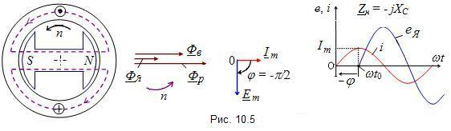

|
При ёмкостной нагрузке jXС (рис. 10.5) сдвиг фаз (угол φ) между током и питающим её напряжением равен 90°. Но в этом случае напряжение (ЭДС) отстаёт по фазе от тока на 90°. При условии, что в момент t0 ток нагрузки имеет максимальное значение Im (ЭДС якоря равна нулю), ось магнитного потока Фв ротора совпадает с осью обмотки фазы А, т. е. магнитный поток якоря Фя совпадает по направлению с магнитным потоком Фв ротора. 
Результирующий магнитный поток Фр равен векторной сумме потоков Фв и Фя. Следовательно, ёмкостная нагрузка создаёт намагничивающую (продольную) составляющую реакции якоря. Результирующий магнитный поток будет больше магнитного потока ротора.
|